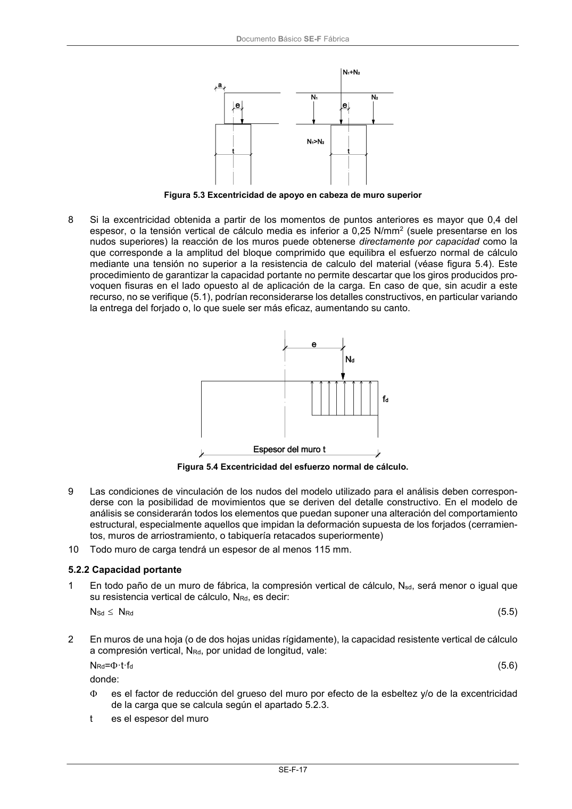

DB-SE-F · 5.2.2 Capacidad portante · versión 2019-12-20
SHA256: e3e0805c3b4c307519c26dc34c3fdbf143d842edd013c91b0f52d2c73403d91c · página física 21 de 70 · métodos de encabezado
solo si están cotejados.
Formatos: Markdown · JSON de bloques · PDF p. 21 · imagen PNG
Documento Básico SE-F Fábrica SE-F-17 Figura 5.3 Excentricidad de apoyo en cabeza de muro superior 8 Si la excentricidad obtenida a partir de los momentos de puntos anteriores es mayor que 0,4 del espesor, o la tensión vertical de cálculo media es inferior a 0,25 N/mm2 (suele presentarse en los nudos superiores) la reacción de los muros puede obtenerse directamente por capacidad como la que corresponde a la amplitud del bloque comprimido que equilibra el esfuerzo normal de cálculo mediante una tensión no superior a la resistencia de calculo del material (véase figura 5.4). Este procedimiento de garantizar la capacidad portante no permite descartar que los giros producidos pro- voquen fisuras en el lado opuesto al de aplicación de la carga. En caso de que, sin acudir a este recurso, no se verifique (5.1), podrían reconsiderarse los detalles constructivos, en particular variando la entrega del forjado o, lo que suele ser más eficaz, aumentando su canto. Figura 5.4 Excentricidad del esfuerzo normal de cálculo. 9 Las condiciones de vinculación de los nudos del modelo utilizado para el análisis deben correspon- derse con la posibilidad de movimientos que se deriven del detalle constructivo. En el modelo de análisis se considerarán todos los elementos que puedan suponer una alteración del comportamiento estructural, especialmente aquellos que impidan la deformación supuesta de los forjados (cerramien- tos, muros de arriostramiento, o tabiquería retacados superiormente) 10 Todo muro de carga tendrá un espesor de al menos 115 mm. 5.2.2 Capacidad portante 1 En todo paño de un muro de fábrica, la compresión vertical de cálculo, Nsd, será menor o igual que su resistencia vertical de cálculo, NRd, es decir: NSd NRd (5.5) 2 En muros de una hoja (o de dos hojas unidas rígidamente), la capacidad resistente vertical de cálculo a compresión vertical, NRd, por unidad de longitud, vale: NRd=·t·fd (5.6) donde: es el factor de reducción del grueso del muro por efecto de la esbeltez y/o de la excentricidad de la carga que se calcula según el apartado 5.2.3. t es el espesor del muro
